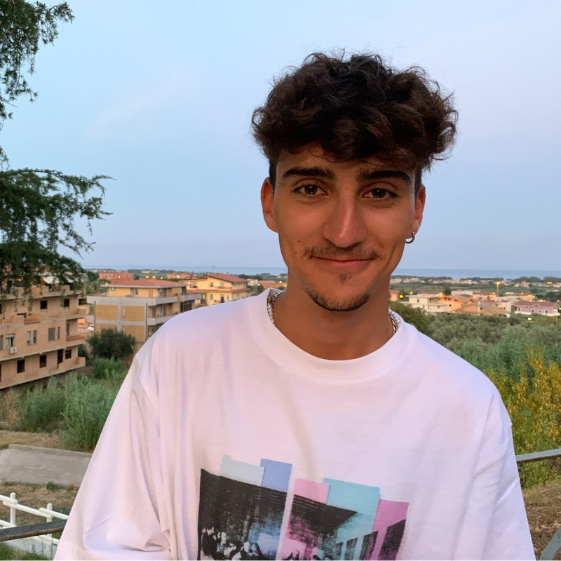

I am a working student at the intersection of rigorous statistical theory and industrial AI. Currently a Junior ML Engineer at Technoprobe and a Master's student in Data Science at the University of Milano-Bicocca, I build robust and explainable machine learning systems grounded in probabilistic reasoning and uncertainty quantification.

I serve as the technical bridge between rigorous statistical analysis and large-scale industrial AI systems. My work focuses on integrating advanced statistical techniques with state-of-the-art Deep Learning to ensure process reliability and optimize semiconductor manufacturing workflows.
Data-driven analysis for the 2026 World Cup Group Stage, delivered in collaboration with football media personality Andrea Marinozzi. Worked within a cross-functional team of four engineers and analysts.
Personalized study plan focused on advanced statistical modeling and modern machine learning techniques — opting for advanced Bayesian statistics courses over standard introductory alternatives to strengthen probabilistic reasoning and uncertainty quantification.
Attended the inaugural edition of the Football Science Conference in Milan, an event bringing together sports scientists, data practitioners, and medical staff at the frontier of athletic performance research.
Notable sessions included Professor Jan Helgerud's presentation on the Norwegian 4×4 method for cardiovascular conditioning, alongside a broader programme exploring how advanced analytics are becoming the operational backbone of modern sports science. The conference underscored a clear convergence between classical exercise physiology and data-driven methodologies — including machine learning-based performance modelling and injury prevention systems.
The event reinforced my interest in the cross-disciplinary application of statistical and ML techniques to sports domains, perspectives I am actively carrying into my work and research.